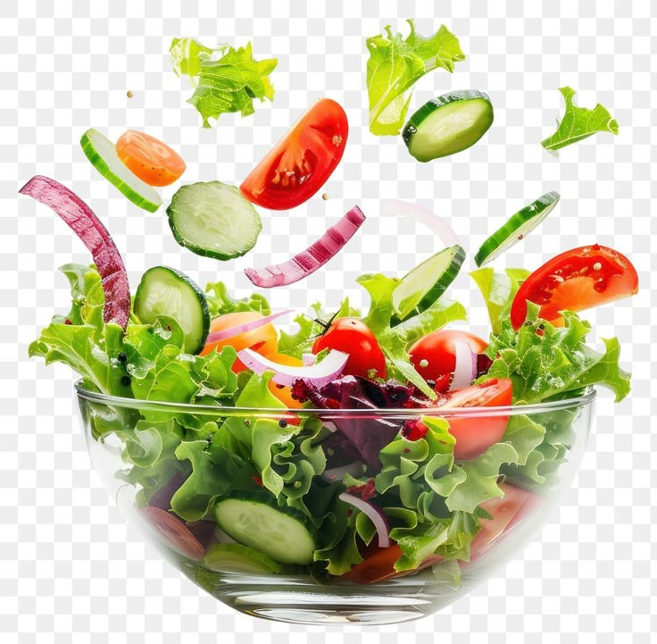

This is a Fresh Garden Salad 🥗😋😋😋

Description
This fresh garden salad is crisp, colorful, and packed with nutrients!
It's a perfect side dish or light meal that combines the best of fresh vegetables
with a simple vinaigrette dressing. Quick to prepare and incredibly refreshing,
it's ideal for lunch or as a healthy accompaniment to any dinner.
Needed
- 4 cups mixed lettuce leaves (romaine, spinach, arugula)
- 1 cucumber, sliced
- 2 medium tomatoes, chopped
- 1/2 red onion, thinly sliced
- 1 bell pepper, chopped
- 1/4 cup olive oil
- 2 tablespoons balsamic vinegar
- 1 teaspoon Dijon mustard
- Salt and pepper to taste
Steps
- Wash and dry all the lettuce leaves thoroughly.
- Chop the cucumber, tomatoes, and bell pepper into bite-sized pieces.
- Thinly slice the red onion.
- In a large salad bowl, combine all the vegetables.
- In a small bowl, whisk together olive oil, balsamic vinegar, and Dijon mustard.
- Season the dressing with salt and pepper to taste.
- Pour the dressing over the salad just before serving.
- Toss gently to coat all ingredients and serve immediately!